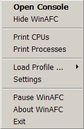

What WinAFC is Not:
- WinAFC does not replace your operating system scheduler. It does not have access to all low level information about processes and threads that an OS usually has. Its best use is to supplement the OS scheduler by specifying CPU cores that should be reserved for particular applications, and for sticking high performance processes and threads to a particular core for improved cache locality and improved performance.
- WinAFC does not optimize affinity settings on a particular machine automatically. Since the program has not been written with a specific target application in mind, the user must specify what processes to be tracked, how many CPUs to assign to each application, or an eventual balancing scheme to be used. Custom policies can be described in a concise manner and the program will monitor running processes and manage affinity and priority settings based on a user defined configuration file.
Table of Contents
- Description
- Installation
- Command Line Parameters
- Context Menu Options
- Changing Settings at Run-time
- Detection of Asymmetric CPU Configurations
- Configuration File Format
- Sample Configuration Files
1. Description
On a system with multiple processors it helps to execute a process on the same CPU it executed before, because its data might still be in the local cache of that CPU. On preemptive operating systems, including most modern desktop OSes, processes execute for a few milliseconds at a time, needing to be rescheduled after each such time slice. Thus, a process may switch between the executing and the ready to execute states tens or hundreds of times a second. The Linux scheduler remembers the last CPU allocated to a process and will attempt to reschedule a process onto the same CPU. The Windows scheduler does not take such information into account. CPUs are assigned to ready to execute processes in a round robin fashion.
One motivation for manually assigning affinities to processes is to "stick" processes or threads to individual CPUs, improving their cache locality and as a result their performance. In general forcing individual processes to CPUs has noticeable benefits only for high performance codes that are not spending most of their time waiting for user input or transferring data from/to disk.
A second motivation for custom affinity settings is to reserve parts of the system for individual applications to limit interferences from or towards other applications. Interferences are caused by contention on shared resources such as processing units, caches, buses, or memory. Thus, the best partitioning is the one that eliminates contention to the maximum number of shared resources.
2. Installation
The program requires no explicit setup. Unpack the content of the downloaded zip archive into a directory, create a configuration file or modify one of the sample files provided, and then just execute the program. Make sure you read the rest of this document to understand what each setting in the configuration file means.
The user writes application profiles in a configuration file. By default, the program looks for a file called 'affinityinput.txt' in the same directory where the WinAFC.exe binary is located. Optionally, the user can specify a different configuration file on the command line.
To address any security concerns that you might have, WinAFC does not access any network interface (you will never see a pop-up from this program asking to be unblocked in your firewall), it does not read or modify any Windows registry entries, and it does not touch any files except for an input configuration file and an output log file. The only system resource it accesses in order to do its job is the list of running processes.
3. Command Line Parameters
Usage:
WinAFC.exe [options] [inputFileName]
-nodetect do not execute CPU detection heuristic
-once apply affinity settings once and then exit
-startdelay=n delay program execution by n seconds
-minimized hide console at program start
-hideicon do not show icon in systray at start and do not create the console (stealth mode)
inputFileName name of input (configuration) file. Default name is 'affinityinput.txt'
The optional -nodetect command line parameter causes the program not
to execute the CPU detection heuristic. This heuristic is normally executed on
program start, before the configuration file is parsed. That is why it had to be
specified on command line and there is no equivalent flag setting in the
configuration file. It may make sense not to execute the CPU detection heuristic
on systems where there are no detectable asymmetries, making the logical CPU
identifiers equivalent to the physical identifiers (e.g.all systems
with one, two or three CPUs, as well as systems with single quad core AMD
processors). No logical CPU identifiers can be used in the configuration
file when the CPU detection heuristic is disabled.
The command line parameter -once instructs WinAFC to only adjust affinities and priorities for the matching processes currently running. The program will not continue to run and monitor your system for new processes, terminating immediately instead.
Parameter -startdelay accepts a positive integer value representing a delay in seconds before the program starts executing. This option may be useful if you want to automatically start WinAFC on Windows start up. Specifying a starting delay of 20 or 30 seconds for the program, will allow Windows to complete initialization a bit faster.
Parameter -minimized causes the console to be hidden at start. Because the console is hidden after its window is created, the console may be visible for a fraction of a second before it is minimized. If you prefer to see no trace of the program at start, use the -hideicon parameter.
Parameter -hideicon starts the program in stealth mode. The icon is not added to the systray area and the console is not created. While the icon is hidden there is no interaction with the program, but the program will execute as normal in the background. To add the icon to the systray at a later time, just attempt to start another instance of the program. A second instance will not be created, but it will cause the first instance to show its icon.
4. Context Menu Options

This section discusses the options available through the pop-up menu. The menu is
depicted in the figure on the right. Some of the options change at run-time depending
on the state of WinAFC.
5. Changing Settings at Run-Time
5.1 General Settings
The General Settings tab contains controls for changing the time interval between process checks, the verbosity of logging and warning messages, and flags that control the restoring of affinities. The time interval and the verbosity settings can be modified also from within a configuration file. This dialog box enables changing them independently at run-time. This dialog contains also a checkbox to explicitly allow setting processes to REALTIME priority.The restore affinity settings specify if the affinities and priorities of currently running processes that match any active application profiles, should be restored to the state at the time the current profile was loaded. As their names indicate, the three toggleable flags specify if affinities should be restored when WinAFC is manually paused, when a new configuration file is loaded, and when the program terminates, respectively.
If checked, the check boxes on the right side of each control specify that the control's current value should be made the default. These settings are saved only when the OK button is pressed. The default settings are saved in an INI file when WinAFC shuts down, and they are restored to their previous values when WinAFC is restarted.
5.2 Startup Options
The Startup Options tab contains settings that take effect only on the next start of WinAFC. Most of these settings can be also specified on the command line. Any options specified on the command line supercede the default options specified using this dialog box. However, the dialog box provides a convenient way of settings some default options without modifying the program shortcut. The default configuration file and the default log file can be also modified from within this dialog box.The ability to load new configuration files dynamically and the settings for restoring affinities are useful mainly when testing different application profiles to find the optimal configuration on a particular system. Once a stable configuration is achieved, the program can be started in stealth mode and executed without any user intervention.
6. Detection of Asymmetric CPU Configurations
On the other hand, all four cores of an AMD Quad CPU share an L3 cache, and thus no two cores should have a preferred affinity for each other. However, dual socket AMD Quad Core systems may experience an asymmetry. The four cores on a chip should communicate faster among themselves than with cores residing on the other socket.
When WinAFC starts, it tries to detect the cores that have an affinity for each other based on an heuristic. For an Intel Quad, the program will correctly recognize the pairs of cores that are located on the same die with very high confidence. This is the only architecture tested by the author of the program.
Other multicore configurations were not tested because of lack of access to the necessary hardware. However, it is my expectation that the program can deal with other multicore architectures. For dual socket Intel Quad Core systems, I expect the program to find four PAIRs of cores that have an affinity for each other, and not two QUADs.
Depending on your particular architecture, the program will recognize either PAIRs, QUADs, or TRIOs of cores (Phenom x3 anyone?). This detection is done purely based on an heuristic, oblivious to the type of hardware you have in your machine.
Individual CPUs can be referenced either directly through their physical identifiers, or through logical identifiers that expose any asymmetries detected in the system independent of how Windows numbers physical CPUs after a system restart. Physical identifiers are formed by keyword CPU followed by a number, i.e. CPU0, CPU1, ..., CPUN-1, where N is the number of processors in the system. Logical identifiers are formed by one of the keywords PAIR, TRIO or QUAD representing the size of the clusters of CPUs that have a mutual affinity for each other, and a number representing the index of the CPU cluster.
The type and number of logical identifiers available are system dependent. The examples below are not exhaustive.
- A single CPU machine has no logical identifiers.
- A machine with two processors will always form a trivial PAIR cluster, named PAIR0. Referring to CPUs through their logical identifiers offers no additional insight over their physical counterparts.
- For a three core machine the only valid clustering of CPUs is a single cluster of size three, creating identifier TRIO0. Logical identifiers offer no additional insight over physical identifiers in this case. However, it is possible for the heuristic to fail finding a clustering.
- Things become more interesting as we get to systems with four CPUs. For Intel Quad core machines the heuristic should find two PAIR clusters corresponding to the two dual core dice with shared L2 caches. For an AMD Quad core machine, the heuristic should find a single QUAD cluster. For a four socket, single CPU/socket system the heuristic should find a single QUAD cluster assuming the links/buses between sockets are approximately symmetric.
- For an eight core machine the heuristic should find either four PAIR clusters in the case of a dual socket Intel Quad core system, or two QUAD clusters for a dual socket AMD Quad core system.
7. Configuration File Format
Empty lines and lines that start with a '#' are ignored.
Configuration lines include flag setting lines, and
application profile lines. A particularly important flag that can
be set is TestMode which causes the program to run in
test mode.
These types of lines can be interleaved in any order. However, the order
in which application profiles are described matters if a process can be matched by
multiple application profiles, as explained later.
7.1 Flag Setting Lines
A number of flags that control the behavior of the application can be specified in the configuration file. These flags control mostly how verbose the program output is. In general, a higher value means a more verbose output.The WarningLevel flag determines the severity of warning messages displayed. The default value for this flag is 2 which is recommended.
The LogLevel flag controls the verbosity of log messages that describe the actions performed by the application. Logging is done to both console and a log file called 'affinitylog.txt' that is created in the same directory where the executable is located. The default log level is set to 3. Verbosity can be controlled separately for the console and the log file using flags ConsoleLogLevel and FileLogLevel respectively.
New users may want to set the log level to 4, which causes the program to print a message for every application profile that had no matching process on program start.
Users can control how frequently WinAFC checks for new processes by setting configuration flag TimeInterval. This flag accepts a strictly positive integer value representing the delay in seconds between consecutive check for new processes. The minimum accepted delay is one second. By default the program checks for matching processes every 30 seconds.
7.2 The Test Mode
A particularly important flag that can be specified in the configuration file is TestMode. If set, this flag instructs WinAFC to run in test mode. The test mode is useful for testing a configuration file without actually changing the affinity of any process or thread in the process.In test mode the program performs all actions that it would normally execute, including matching processes to Application Profiles, computing the amount of resources used, determining the CPUs that must be assigned to each process or thread, testing for permissions to modify affinity for the targeted processes, but the program will stop short of changing any affinity. Log messages, if enabled, will look as if the program performed the affinity change, giving users the chance to validate a configuration file.
The test mode is enabled by setting the TestMode flag to a value greater than zero. A value of zero disables the test mode. Negative values are not accepted by the parser. If you specify a negative value for any of the flags, it will cause the parser to ignore that line (with a warning message). For the TestMode flag, this means the test mode will not be enabled.
Test mode can be used in combination with the -once command line parameter to test a configuration file and then exit, or without, causing the program to run and monitor the system for any new matching processes until interrupted by user.
7.3 Defining Application Profiles
To have WinAFC automatically change the affinity of an application, we need to create an application profile for that application.An application profile is specified on a single line. Each application profile includes the following information: an application name, a CPU mask, and optional attributes in the following format:
ApplicationName := CPU_Mask [attr1=val1,attr2=val2]
An application name must specify the full path to the executable of a program for which we want to manage affinity. Wildcards '*' and '?', with their traditional meaning, may be used inside application names. A '?' matches any single character. A '*' matches zero or more characters.
For example, *\notepad.exe matches any notepad.exe process wherever it
is installed.
C:\Program Files\* matches the processes of all programs installed in "C:\Program Files".
The names of running processes are matched against the application profile names, in the order in which they are written in the configuration file. The first matching application profile name determines the profile used for a process. It is therefore important to have the more general profiles specified after the more restrictive ones.
A CPU mask must specify one or more CPUs separated by the '+' operator. CPUs are specified using keywords CPU, PAIR, TRIO, or QUAD, followed by a number (with no space in-between). CPUs can be specified by their physical Windows identifiers, or by logical identifiers that are architecture dependent (see Section on CPU detection).
Physical identifiers are formed by keyword CPU followed by a number. Counting starts from 0. Thus, the first CPU is always CPU0, second CPU is CPU1, and so on.
By using logical CPU identifiers in the CPU mask of an application profile, we can create profiles aware of CPU asymmetries, that work the same way independent of how Windows numbers the physical cores after a system boot.
For example, assuming we have an Intel Quad core machine and we want our favorite application to execute on the second pair of cores that share an L2 cache, we write a profile like:
MyApplicationPathAndName := PAIR1
The program provides also a mechanism to refer to individual CPUs part of such
logical CPU clusters. A PAIR includes two physical CPUs. Without knowing the
physical IDs, we can refer to the individual CPUs of a PAIR using the
resolution operator '::'.
Thus, PAIR0::CPU0 and PAIR0::CPU1 identify precisely
the two individual CPUs of the first PAIR.
Similarly, for an architecture with QUAD logical sets, QUAD0::CPU0,
QUAD0::CPU1, QUAD0::CPU2 and QUAD0::CPU3 uniquely
define the four CPUs of the first QUAD.
Any logical identifier used in a CPU mask is automatically expanded to the
enumeration of all physical CPUs to which it maps.
A CPU mask defined as PAIR0 is equivalent to a CPU mask defined as
PAIR0::CPU0 + PAIR0::CPU1.
Note: It is not a good idea to mix physical and logical identifiers in the
same configuration file, because logical identifiers can evaluate to different
physical identifiers after a system reboot.
The order in which CPUs are declared in the CPU mask is important. The CPU mask is stored internally as a list. When multiple processes match an application profile and the optional attribute assign is specified with a value lower than the total number of CPUs in the CPU mask, CPUs are assigned to matching processes in the order in which they are listed and based on the specified policy.
Keywords SKIP and ALL can be used instead of a CPU mask. SKIP indicates that the program should not change affinities for the matching processes. ALL is a shortcut for specifying all available CPUs in the system. ALL expands to a list of all physical CPUs ordered by their Windows identifiers.
By default, all processes that match an application profile will have their affinities set to the specified CPU mask. We can control this process further by using optional attributes for each profile. The six attributes currently recognized by the program are listed in the table below.
| Attribute name and values | Usage examples |
|---|---|
| assign=<int> | see examples 2, 3, 4, 7 |
| policy=(ROUNDROBIN | BALANCED | PSEUDOBALANCED) | see examples 3, 4 |
| resource=(MEMUSE | CPUUSE) | see examples 3, 4 |
| threads=(yes | no) | see example 6 |
| priority=(Unchanged | Idle | BelowNormal | Normal | AboveNormal | High | Realtime*) | see example 7 |
| force=(yes | no) | see example 1 |
Note: All attributes and their literal values are case-insensitive and attributes can be specified in any order.
The assign attribute accepts an integer value strictly greater than zero but less or equal than the total number of CPUs specified in the CPU mask. A value outside this range will make the application profile invalid, causing WinAFC to ignore the profile.
The assign value indicates how many CPUs to be assigned to each running process matching this application profile. If the attribute is not specified, all CPUs in the CPU mask are assigned to all matching processes.
If the assign value is strictly less than the number of CPUs in the CPU mask, then CPUs are assigned to processes according to the specified policy.
If no policy attribute is specified, the default policy is ROUNDROBIN which assigns the requested number of CPUs in a circular fashion, and in the order in which processes are encountered. This policy insures that an approximately equal number of processes are assigned to each CPU. However, it ignores completely the resources used by each process and it is possible for multiple heavy processes to be assigned to the same CPU, while another CPU receives lighter processes. This policy is recommended when the matching processes are expected to be fairly homogeneous.
The BALANCED and PSEUDOBALANCED policies assign CPUs with an eye towards balancing the consumption of resources on each CPU. For this, all matching processes are sorted in descending order by the amount of resources used.
In the case of a BALANCED policy, the process with the maximum resource consumption is selected and assigned to the CPU(s) with the lowest load. This approach is repeated until all processes have been assigned to CPUs.
The PSEUDOBALANCED policy attempts to balance both the resource consumption and the number of processes assigned to each CPU, withoyout excelling at either task. It combines features of the previous two policies. Processes sorted by resource consumption are assigned linearly to the CPUs specified in the CPU mask. When we exhaust all CPUs, we continue the process by traversing the list of CPUs in reverse order.
It is important to realize that any balancing scheme is applied to each application profile in isolation. If multiple application profiles use the same set of CPUs, the program does not track the load assigned to a CPU across different application profiles.
The resource attribute specifies which resource is used as a balancing metric. The two available options are MEMUSE representing the amount of memory consumed by the process, and CPUUSE which represents how many CPU cycles have been used by the process in the last 30 seconds. CPUUSE is the default resource used when none is explicitly specified.
The threads attribute indicates if the program should manage the affinity settings for individual threads in the matching processes. The two valid values are yes and no, with no being the default value.
If threads=yes is specified, then the affinity settings of the matching profile are applied to the individual threads of all processes matching this profile.
If one of the two balancing policies is specified in combination with threads=yes, then only CPUUSE is accepted as a valid resource value. Memory is a shared resource among all threads of a process, and therefore we cannot measure how much memory is used by each individual thread.
The priority attribute specifies an optional priority value to be set for the matching processes. The possible values for this attribute are Unchanged which is the default value, Idle, BelowNormal, Normal, AboveNormal and High corresponding to the equivalent priority settings in the Windows Task Manager. To specify custom priorities for processes without adjusting their affinities, use keyword SKIP for the CPU mask field of their profiles.
The force attribute, if set to yes, causes WinAFC to re-set the affinities and priorities of all matching processes every time it checks for new processes. If the attribute is set to no or if the attribute is not explicitly specified, WinAFC will set a process' affinity and priority only first time the process is encountered. If the user or another program modifies the affinity or the priority of a monitored process, WinAFC will assume the user wants the affinity modified and it will not revert it back to its managed setting. All versions before version 0.82 implement only the unforced behavior.
8. Sample Configuration Files
All examples assume a machine with an Intel Quad Core CPU for which WinAFC detected the two PAIRs of cores that share the L2 cache. All profiles use logical CPU IDs in the CPU mask.
Let's assume the user wants to run a VMWare virtual machine on two of the cores that share an L2 cache, and a GPU client on one of the remaining two cores. In addition, the user wants WinAFC to force the affinity settings even if another program attempts to change them. There should be only one vmware-vmx.exe process running. The application profile for the virtual machine can be written as:
*\vmware-vmx.exe := PAIR1 [force=yes]In this scenario we assigned the second PAIR of cores to the virtual machine. The force attribute specifies that affinity should be always reverted to PAIR1 if an external program changes it. We will assign the second CPU of PAIR0 to the GPU client:
D:\Folding@Home\Folding@home-Win32-GPU_XP-620\FahCore_*.exe := PAIR0::CPU1 [force=yes]We assumed the GPU client is installed in "D:\Folding@Home\Folding@home-Win32-GPU_XP-620". We used a wildcard to specify the process name to match any GPU FahCore version that might be created by the Stanford team. We did not assign any heavy process to CPU PAIR0::CPU0. For a non-dedicated folding machine we could use this CPU for Firefox, Thunderbird, iTunes, or some other application of your choosing, by writing profiles like the ones below:
*\firefox.exe := PAIR0::CPU0 *\thunderbird.exe := PAIR0::CPU0 *\itunes.exe := PAIR0::CPU0
Let's assume our user wants to run two VMWare virtual machines. Each virtual machine should use two cores located on the same die for maximum performance. There should be two vmware-vmx.exe processes running. We can specify the optimum affinity setting for this scenario with a simple profile:
*\vmware-vmx.exe := PAIR0+PAIR1 [assign=2]When only one virtual machine is started, the profile will still assign two of the cores that share an L2 cache to the virtual machine that is running, while the other two cores remain unused. However, there are no guarantees about which PAIR of cores is going to be used for the running VM.
In this scenario the user runs one Windows SMP client, one process per core. In this case, the optimum process assignment would be to use a balancing policy that offers the best utilization of the shared L2 caches.
We want to assign the process with the largest working set and the process with the smallest working set to cores on the same die. The middle two processes should be assigned to the second die. We can write this policy as follows:
D:\Folding@Home\FAH6.22-win32-SMP\FahCore_*.exe := PAIR0::CPU1+PAIR1+PAIR0::CPU0 [assign=1,resource=MEMUSE,policy=PSEUDOBALANCED]Make sure that the profile definition is not split onto multiple lines or the parser will generate an error. Notice how we used a wildcard again to match any core that the Stanford people might throw at us.
Notice also how we specified the CPU mask. By using a balancing policy and resource=MEMUSE, processes are sorted by the amount of memory they use. They are assigned to CPUs, one CPU per process, in the order in which CPUs are listed. As a result, the largest process will be assigned to PAIR0::CPU1, next two processes are assigned to PAIR1::CPU0 and PAIR1::CPU1, and the smallest process is assigned to PAIR0::CPU0.
This is the optimal theoretical assignment for this scenario. However, I have no idea if it will make a significant difference in practice compared to a random assignment of one process per CPU. In any case, there should be no other assignment that would do better with a single SMP client on an Intel Quad.
User runs two Windows SMP clients. We assign each client to two cores that share an L2 cache. The two SMP clients are installed in different directories. We use this information to distinguish between their processes:
D:\Folding@Home\FAH6.22-win32-SMP1\FahCore_*.exe := PAIR0 [assign=1,resource=CPUUSE,policy=PSEUDOBALANCED] D:\Folding@Home\FAH6.22-win32-SMP2\FahCore_*.exe := PAIR1 [assign=1,resource=CPUUSE,policy=PSEUDOBALANCED]
This scenario is not inspired by FAH. In fact it is fully fictional. I do not see why anybody would manage affinity for all programs in "C:\Program Files\". The example is provided to introduce two more keywords that were not mentioned before.
If you have a very general template that matches many programs, but you do not want to apply this or any other profile to a few select programs, you can specify a template for programs to be skipped and later write the more general template to be applied to the remaining programs.
For example, let's say we want to set affinity for all processes located in C:\Program Files\, except for MS Office processes, to run on all available CPUs.
First, we write the more restrictive template. We use keyword SKIP instead of a CPU mask, which causes these processes to not have their affinity modified from their current settings.
C:\Program File\Microsoft Office\* := SKIPNext, we write the template for all processes in C:\Program Files. We use keyword ALL to specify all available CPUs.
C:\Program File\* := ALL
Finally, let's assume you want to reset the affinity of all processes and threads to use all available CPUs. You can do this with a very simple profile:
* := ALL [threads=yes]By using the threads=yes optional attribute, we indicate that all threads of all matching processes should have their affinity set to all available CPUs.
The single '*' will match all running processes. Starting with version 0.82 this includes most of System processes as well as processes running under different user accounts. So use it carefully.
An user wants to run two VMWare virtual machines and a GPU folding client. Each virtual machine should use two cores located on the same die for maximum performance, and the GPU client is assigned to one of the cores. In order not to have the GPU client bottlenecked by the CPU, we want to assign it a higher priority than to the virtual machines. There should be two vmware-vmx.exe processes running. We can specify the optimum affinity setting for this scenario with the following two profiles:
*\vmware-vmx.exe := PAIR0+PAIR1 [assign=2,priority=idle] *\FahCore_11.exe := PAIR1::CPU0 [priority=BelowNormal]
Final note: You should try any scenario under the TestMode first to verify that it does what you expect.
Project hosted on
- Copyright
- © 2008-2009, Gabriel Marin <baobab13@users.sourceforge.net>.
- License
- See License.txt.